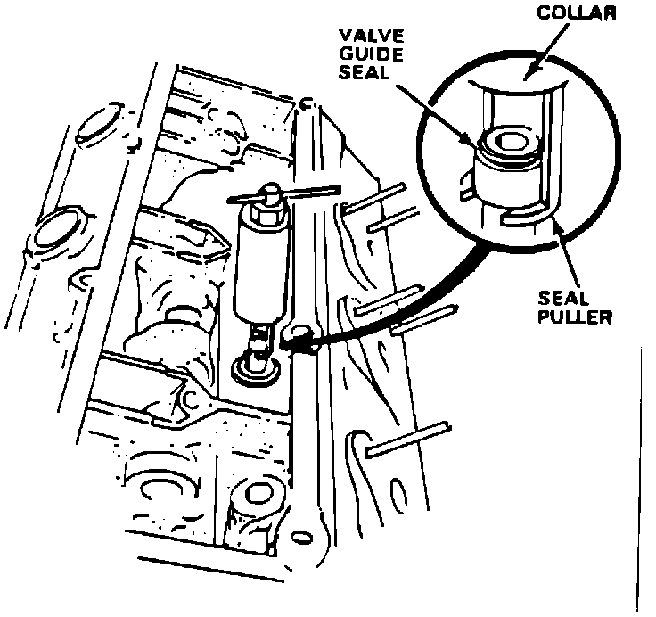
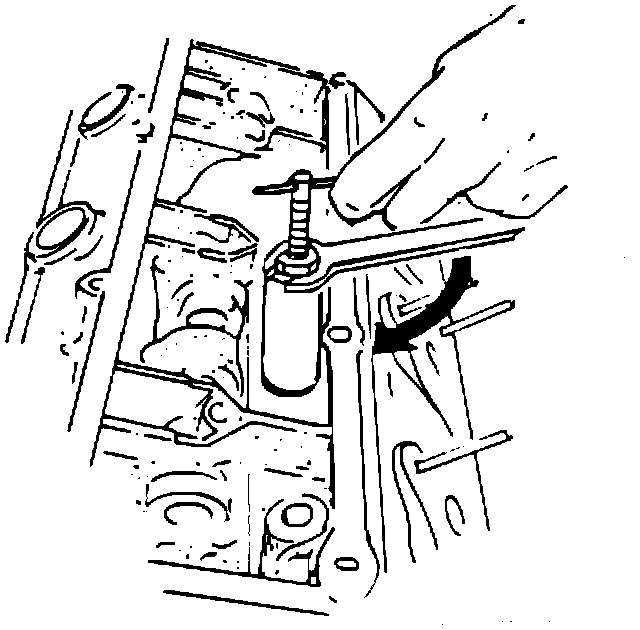

Valve Guide Seal Remover
July 14, 1986BULLETIN NO. 86-006
YEAR 1986
MODEL LEGEND
APPLICATION ALL
Valve Guide Seal Remover
The design of the Legend cylinder head and its valve guide seals make it necessary to use a special valve guide seal remover.
Valve Guide Seal Remover T N 07936-PH7000A
NOTE:
This tool and the procedure described below replace those described in the 86 Legend Service Manual.
HOW TO USE:
1. Remove the cylinder head and valve springs using the procedure in the service manual.
2. Turn the 14 mm nut on the tool counter-clockwise until it reaches the handle.
3. Let the seal puller slide all the way out of the collar.

4. Hold the collar up against the nut and insert the seal puller under the valve guide seal as shown in the drawing.
5. Slide the collar down over the seat puller until it rests on the valve spring seat.

6. Hold the handle stationary and turn the 1.4 mm nut clockwise with a wrench until the valve guide seal is removed from the guide.
7. Back off the 14 mm nut and slide the seal puller down to remove the old seal from the tool.